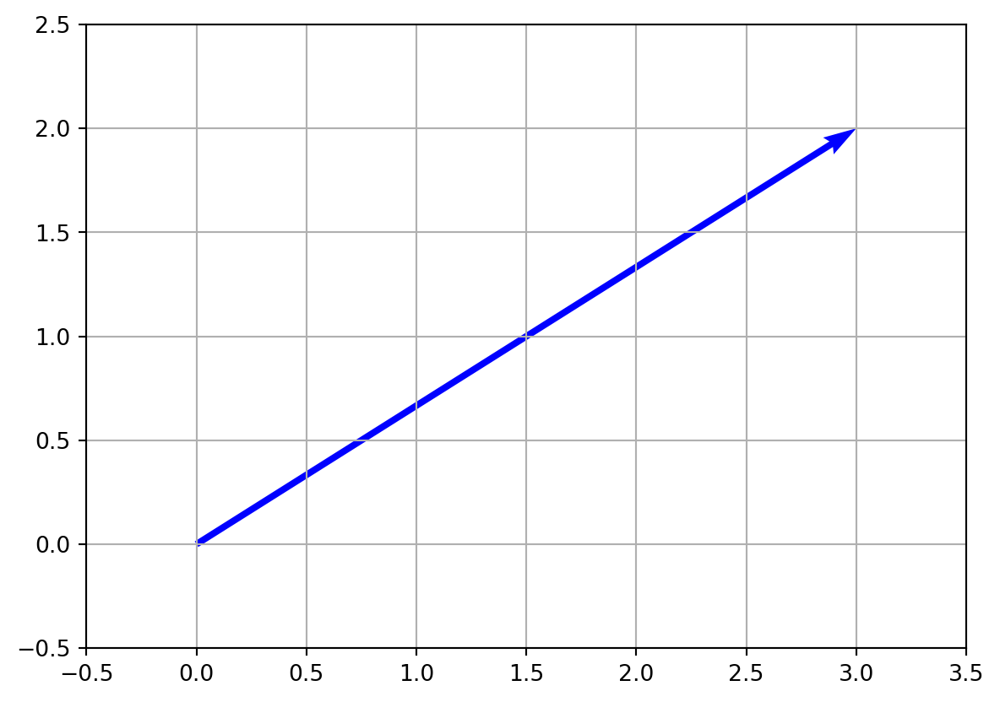
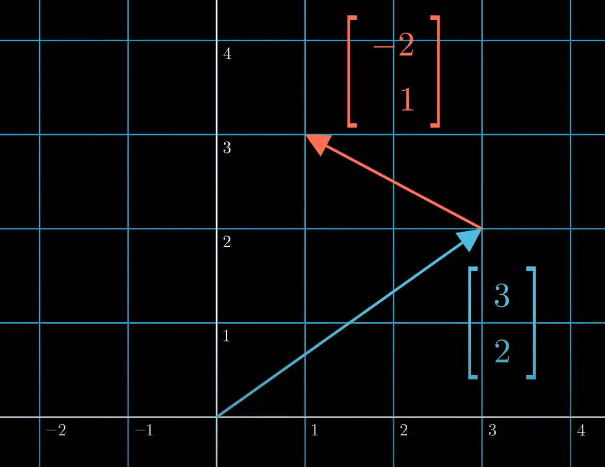
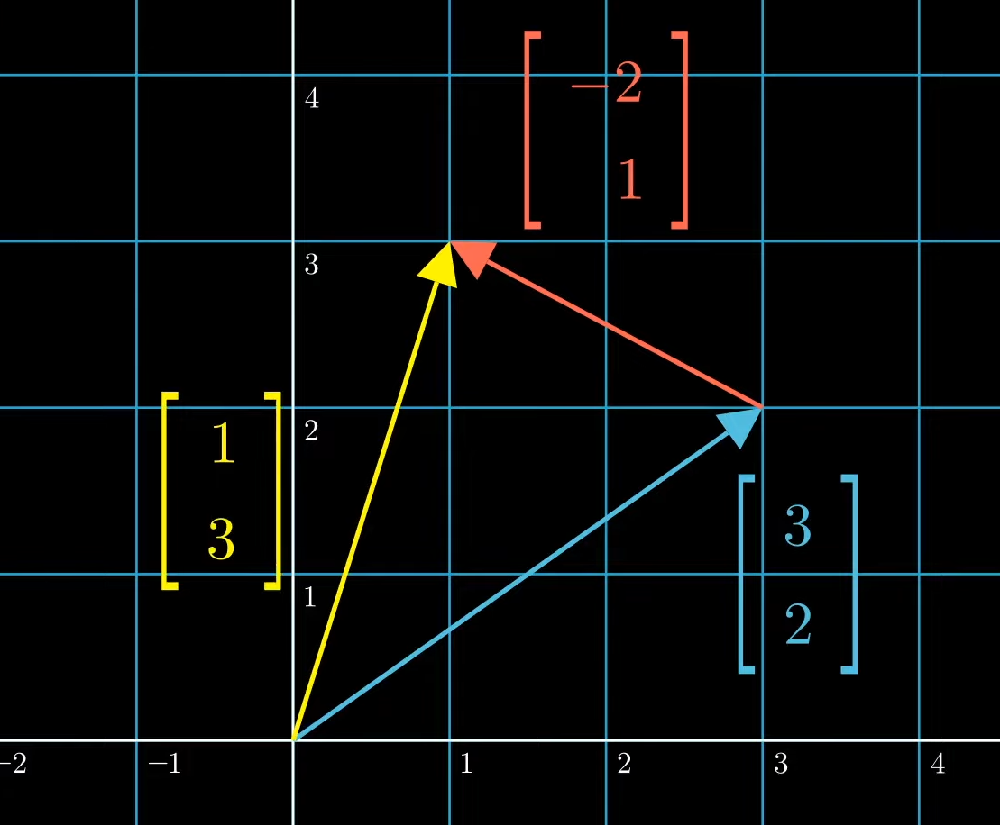
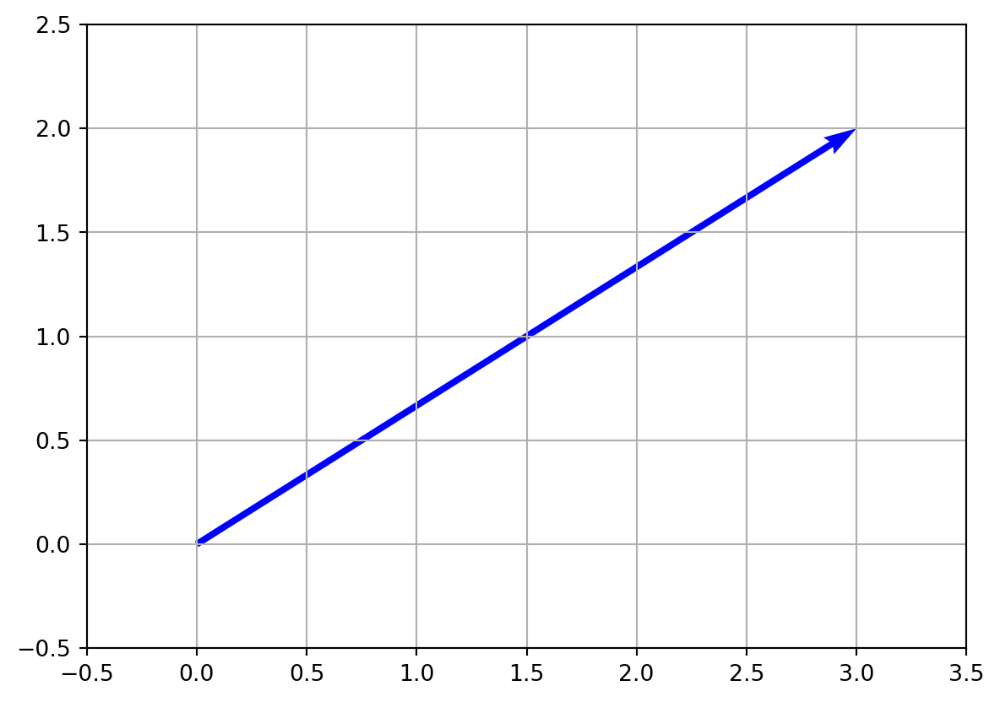

Basics (1) - Vector Operations
Introduction, Scalr, Vector, Addition, Scalar Multiplication
Mathematics
Basic Linear Algebra
- 스칼라는 일반적으로 실수인 하나의 수학적인 양으로, 단일 값으로 나타낼 수 있습니다. 스칼라는 일반적으로 \(a, b, c\)와 같은 소문자로 표기된다.
- 간단히 말해서, 스칼라는 온도나 높이와 같은 특정 물리적 양의 크기를 의미한다.
- 벡터 \(\textbf{v}\) 는 속도와 힘과 같은 크기와 방향을 모두 가진 수학적 개체이다.
- \(n\) 차원 유클리드 공간 \(\mathbb{R}^n\) 에서, 벡터 \(\textbf{v}\) 는 일반적으로 \(n\) 개의 실수로 이루어진 순서가 있는 리스트로 표현된다
- \(\mathbf{v} =\begin{bmatrix} x\ y \end{bmatrix}\) 일 때, \(\mathbf{v}\) 의 크기는 \(||\mathbf{v}|| = \sqrt{x^{2} + y^{2}}\) 이다.
- \(\mathbf{v}\) 의 방향은 \(x\) 축과 이루는 각도로 표현되며, \(\theta=\tan^{-1}(\frac{y}{x})\) 이다. 만약 크기와 벡터가 같다면, 그들은 같은 벡터이다.
- 벡터는 크기와 방향을 함께 나타내는 추상적인 수학적 객체이다.
- 벡터는 일반적으로 순서가 있는 숫자들의 집합으로 표현된다(프로그래밍에서의 리스트와 유사한 형태), 종종 열 또는 행으로 배열되며 이를 벡터 구성 요소라고 한다.
- 수학에서 벡터는 유클리드 공간이나 추상적인 벡터 공간과 같은 다양한 벡터 공간에서 정의되며, 덧셈, 스칼라 곱셈, 내적과 같은 특정 대수적 규칙을 따른다.
- 벡터는 물리적인 양과 현상을 나타내고 분석하는 데 사용된다.
- 벡터는 이동, 속도, 가속도, 힘, 운동량과 같이 크기와 방향을 모두 갖는 물리적인 양을 설명하는 데 사용된다.
- 물리학에서 벡터는 종종 화살표로 표현되며, 화살표의 길이는 벡터의 크기를 나타내고, 화살표의 방향은 벡터의 방향을 나타낸다.
- 물리학에서의 벡터는 벡터 덧셈과 스칼라 곱셈의 법칙을 따르며, 벡터 대수와 미적분을 사용하여 다양한 물리학 분야에서 문제를 분석하고 해결하는 데 활용될 수 있다.
- 교환 법칙(Commutative Property): 덧셈의 순서는 결과에 영향을 주지 않는다. \[ \mathbf{u} + \mathbf{v} = \mathbf{v} + \mathbf{u} \]
- 결합 법칙(Associative Property): 덧셈에서 벡터들의 그룹화는 결과에 영향을 주지 않는다. \[ \mathbf{u} + (\mathbf{v} + \mathbf{w}) = (\mathbf{u} + \mathbf{v}) + \mathbf{w} \]
- 항등 원소(Identity Element): \(\mathbf{0}\) 로 표시되는 항등 벡터가 존재하여, 어떤 벡터에 더해져도 동일한 벡터를 얻을 수 있다. \[ \mathbf{v} + \mathbf{0} = \mathbf{v} \]
- 역원소(Inverse Element): 모든 벡터 \(\mathbf{v}\) 에 대해, \(−\mathbf{v}\) 로 표시되는 덧셈 역원소가 존재하며, 이를 \(\mathbf{v}\) 에 더하면 항등 벡터를 얻을 수 있다. \[ \mathbf{v} + (-\mathbf{v}) = \mathbf{0} \]
- 폐쇄성(Closure): 벡터 뺄셈은 주어진 벡터 공간에서 폐쇄됩니다. 만약 두 벡터가 주어진 벡터 공간에 속한다면, \(\mathbf{u} - \mathbf{v}\) 도 벡터이다.
- 가감 역원의 존재(Existence of Additive Inverse): 모든 벡터 \(\mathbf{u}\) 에 대해, \(-\mathbf{u}\) 라는 가감 역원이 존재하여 \(\mathbf{u} + (-\mathbf{u}) = \mathbf{0}\) 이다.
- 교환 법칙(Commutativity): \(\mathbf{u} - \mathbf{v} = \mathbf{v} - \mathbf{u}\).
- 결합 법칙(Associativity): \((\mathbf{u} - \mathbf{v}) - \mathbf{w} = \mathbf{u} - (\mathbf{v} + \mathbf{w})\).
- Closure: 스칼라 \(c\) 와 벡터 \(\mathbf{v}\) 에 대해, 스칼라 곱 \(c\mathbf{v}\) 역시 벡터이다.
- 스칼라와의 결합법칙: 스칼라 \(c\) 와 \(d\) 와 벡터 \(\mathbf{v}\) 에 대해, \((cd)\mathbf{v} = c(d\mathbf{v})\) 이다.
- 스칼라와의 분배법칙: 스칼라 \(c\) 와 \(d\) 와 벡터 \(\mathbf{v}\) 에 대해, \((c+d)\mathbf{v} = c\mathbf{v} + d\mathbf{v}\) 이다.
- 벡터와의 분배법칙: 스칼라 \(c\)와 벡터 \(\mathbf{u}\), \(\mathbf{v}\)에 대해, \(c(\mathbf{u}+\mathbf{v}) = c\mathbf{u} + c\mathbf{v}\) 이다.
- 곱의 항등원: 벡터 \(\mathbf{v}\) 에 대해, \(1\mathbf{v} = \mathbf{v}\) 이며, 여기서 \(1\) 은 곱의 항등원이다.
- Identity Element: 원점의 위치 벡터를 나타내는 $ $ 은 벡터 덧셈에 대한 항등원 역할을 한다. \[ \mathbf{v} + \mathbf{0} = \mathbf{v} \]
- Additive Inverse: 모든 위치 벡터 $ $ 에 대해, $ - $ 라는 벡터가 존재하여 그들의 합이 영 벡터가 된다. \[ \mathbf{v} + (-\mathbf{v}) = \mathbf{0} \]
- Scalar Multiplication: 위치 벡터 \(\mathbf{v}\) 의 스칼라 곱은 스칼라 \(c\) 와의 곱셈이 벡터 덧셈과 스칼라 덧셈에 대해 분배 법칙을 따른다: \[ c(\mathbf{v} + \mathbf{w}) = c\mathbf{v} + c\mathbf{w} and (c + d)\mathbf{v} = c\mathbf{v} + d\mathbf{v} \]
- Scalar Identity: 위치 벡터 \(\mathbf{v}\) 를 스칼라 1로 곱하면 벡터는 변경되지 않는다. \[ 1 \cdot \mathbf{v} = \mathbf{v} \]
- Associativity of Vector Addition: 벡터 덧셈은 결합법칙을 따른다. 즉, 위치 벡터 \(\mathbf{u}\), \(\mathbf{v}\), \(\mathbf{w}\) 에 대하여 다음이 성립한다. \[ (\mathbf{u} + \mathbf{v}) + \mathbf{w} = \mathbf{u} + (\mathbf{v} + \mathbf{w}) \]
- Commutativity of Vector Addition: 벡터 덧셈은 교환법칙을 따른다. 즉, 위치 벡터 \(\mathbf{u}\) 와 \(\mathbf{v}\) 에 대하여 다음이 성립한다: \[ \mathbf{u} + \mathbf{v} = \mathbf{v} + \mathbf{u} \]
- A scalar is a single mathematical quantity, usually a real number, which can be represented by a single value. Scalars are typically denoted by lowercase letters, such as \(a, b, c,\) and so on.
- Simply, a scalar means a magnitude of a certain physical quantity such as temperature and height.
A vector \(\textbf{v}\) is a mathematical object that represents a quantity with both a magnitude and a direction such as velocity and force.
In \(n\)-dimensional Euclidean space \(\mathbb{R}^n\), a vector \(\textbf{v}\) is typically represented as an ordered list of \(n\) real numbers:
the magnitude of \(\mathbf{v} =\begin{bmatrix} x\\ y \end{bmatrix}\) is \(||\mathbf{v}|| = \sqrt{x^{2} + y^{2}}\)
the direction of it is the angle with the x axis, \(\theta=\tan^{-1}(\frac{y}{x})\)
If magnitude and vector are equal, then they are equal vectors
- A vector is an abstract mathematical object that represents a quantity with both magnitude and direction.
- Vectors are typically represented as ordered sets of numbers (a list in programming), often arranged in a column or row, known as vector components.
- Vectors in mathematics can be defined in various vector spaces, such as Euclidean space or abstract vector spaces, and they follow specific algebraic rules for addition, scalar multiplication, and dot product.
- Vectors are used to represent and analyze physical quantities and phenomena.
- Vectors are used to describe physical quantities that have both magnitude and direction such as displacement, velocity, acceleration, force, and momentum.
- Vectors in physics are often represented by arrows, where the length of the arrow represents the magnitude of the vector, and the direction of the arrow represents the direction of the vector.
- Vectors in physics obey the laws of vector addition and scalar multiplication, and they can be combined and manipulated using vector algebra and calculus to analyze and solve problems in various branches of physics.
- Commutative Property: The order of addition does not affect the result \[ \mathbf{u} + \mathbf{v} = \mathbf{v} + \mathbf{u} \]
- Associative Property: The grouping of vectors in an addition does not affect the result. \[ \mathbf{u} + (\mathbf{v} + \mathbf{w}) = (\mathbf{u} + \mathbf{v}) + \mathbf{w} \]
- Identity Element: There exists an identity vector, denoted as \(\mathbf{0}\) such that adding it to any vector yields the same vector. \[ \mathbf{v} + \mathbf{0} = \mathbf{v} \]
- Inverse Element: For every vector \(\mathbf{v}\), there exists an additive inverse vector, denoted as \(−\mathbf{v}\), such that adding it to \(\mathbf{v}\) yields the identity vector. \[ \mathbf{v} + (-\mathbf{v}) = \mathbf{0} \]
- Closure: Vector subtraction is closed under the vector space. If two vectors are in the given vector space, then \(\mathbf{u} - \mathbf{v}\) is a vector.
- Existence of Additive Inverse: For every vector \(\mathbf{u}\), there exists an additive inverse \(-\mathbf{u}\) such that \(\mathbf{u} + (-\mathbf{u}) = \mathbf{0}\).
- Commutativity: \(\mathbf{u} - \mathbf{v} = \mathbf{v} - \mathbf{u}\).
- Associativity: \((\mathbf{u} - \mathbf{v}) - \mathbf{w} = \mathbf{u} - (\mathbf{v} + \mathbf{w})\).
- Closure: For a scalar \(c\) and a vector \(\mathbf{v}\), the scalar multiple \(c\mathbf{v}\) is also a vector.
- Associativity with Scalars: For scalars \(c\) and \(d\) and a vector \(\mathbf{v}\), \((cd)\mathbf{v} = c(d\mathbf{v})\).
- Distributivity with Scalars: For scalars \(c\) and \(d\) and a vector \(\mathbf{v}\), \((c+d)\mathbf{v} = c\mathbf{v} + d\mathbf{v}\).
- Distributivity with Vectors: For a scalar \(c\) and vectors \(\mathbf{u}\) and \(\mathbf{v}\), \(c(\mathbf{u}+\mathbf{v}) = c\mathbf{u} + c\mathbf{v}\).
- Multiplicative Identity: For a vector \(\mathbf{v}\), \(1\mathbf{v} = \mathbf{v}\), where \(1\) is the multiplicative identity.
- Identity Element: The location vector of the origin, denoted as \(\mathbf{0}\), acts as the identity element for vector addition \[ \mathbf{v} + \mathbf{0} = \mathbf{v} \]
- Additive Inverse: For every location vector \(\mathbf{v}\), there exists a vector \(-\mathbf{v}\) such that their sum is the zero vector: \[ \mathbf{v} + (-\mathbf{v}) = \mathbf{0} \]
- Scalar Multiplication: Scalar multiplication of a location vector \(\mathbf{v}\) by a scalar \(c\) distributes over vector addition and scalar addition: \[ c(\mathbf{v} + \mathbf{w}) = c\mathbf{v} + c\mathbf{w} and (c + d)\mathbf{v} = c\mathbf{v} + d\mathbf{v} \]
- Scalar Identity: Multiplying a location vector \(\mathbf{v}\) by a scalar 1 leaves the vector unchanged: \[ 1 \cdot \mathbf{v} = \mathbf{v} \]
- Associativity of Vector Addition: Vector addition is associative, meaning that for location vectors \(\mathbf{u}\), \(\mathbf{v}\), and \(\mathbf{w}\): \[ (\mathbf{u} + \mathbf{v}) + \mathbf{w} = \mathbf{u} + (\mathbf{v} + \mathbf{w}) \]
- Commutativity of Vector Addition: Vector addition is commutative, meaning that for location vectors \(\mathbf{u}\) and \(\mathbf{v}\): \[ \mathbf{u} + \mathbf{v} = \mathbf{v} + \mathbf{u} \]
1 Introduction
딥러닝은 상호 연결된 노드 또는 뉴런들의 계층으로 이루어진 신경망의 집합이며, 이들 간의 연결 가중치는 역전파라는 과정을 통해 학습된다
선형 대수학은 딥러닝에 있어서 근본이 되는 역할을 하는데, 신경망의 학습에 관련된 많은 계산은 선형 대수 연산으로 표현될 수 있다. 예를 들어, 행렬 곱셈은 신경망의 각 계층의 출력을 계산하는 데 사용되며, 가중치에 대한 손실 함수의 그래디언트는 행렬 곱셈과 벡터 연산을 포함한 미분의 연쇄 법칙을 사용하여 계산된다.
행렬 곱셈 외에도, 고유벡터, 고유값, 특이값 분해(SVD)와 같은 다른 선형 대수학적 개념들도 딥러닝에서 중요하다. 예를 들어, SVD는 데이터셋의 차원을 축소하거나 주성분을 계산하는 데 사용된다. 이는 데이터 시각화와 특징 추출에 유용하다.
Numpy, Scipy, PyTorch와 같은 선형 대수학 라이브러리들은 이러한 연산의 효율적인 구현을 제공하여 GPU에서 대규모 신경망을 훈련하는 데 필수적이다. 이러한 라이브러리 없이 딥러닝 알고리즘을 구현하는 것은 훨씬 어렵고 시간이 많이 소요된다.
2 Physical Quantity
2.1 Scalar
2.2 Vector
Vector in Mathematics vs Physics
2.2.1 Vecotr in Mathematics
2.2.2 Vecotr in Physics
이 블로그는 벡터의 수학적인 관점에 초점을 맞춘다.
\[ \textbf{v}= \begin{bmatrix} v_1 \\ v_2 \\ \vdots \\ v_n \end{bmatrix} \]
여기서 \(v_1, v_2, \ldots, v_n\) 은 벡터 \(\textbf{v}\) 의 구성 요소이다.
2.2.3 Plotting Vectors on the Coordinate Plane
Map \(\begin{bmatrix} 3\\ 2 \end{bmatrix}\) into \(x=3\), \(y=2\) on the Coordinate Plane
Reference: Read This Article with Interactive Visualization - Points and Vectors
3 Basic Vector Operations
3.1 Addition of Vectors
두 벡터의 덧셈은 해당하는 구성 요소들을 더하는 과정입니다. 만약 \(\textbf{a}\) 와 \(\textbf{b}\) 가 같은 차원의 두 벡터라면, 그들의 합인 \(\textbf{c} = \textbf{a} + \textbf{b}\) 는 \(\textbf{a}\) 와 \(\textbf{b}\) 의 \(i\) 번째 구성 요소를 더한 값으로 이루어진 벡터이다.
\[ \begin{align*} \textbf{c}&=\textbf{a}+\textbf{b}\\ c_i &= a_i + b_i \end{align*} \]
예를 들어, 만약 \(\textbf{a} = [3, 2]\) 이고 \(\textbf{b} = [-2, 1]\) 이라면, 그들의 합인 \(\textbf{c} = [1, 3]\) 이 된다.



3.1.1 Properties
Why to check properties of definitions?
특정 연산과 특정 집합이 정의되었을 때, 그들의 속성을 알아야 하는 것이 중요하다. 예를 들어, 만약 그것이 우리가 알고 있는 실수 집합의 속성과 완전히 동일하다는 것이 증명된다면, 실수 집합에서 증명된 모든 규칙과 정리를 새로 정의된 집합에도 적용할 수 있다.
연산과 집합의 속성을 이해하는 것은 우리가 기존 도메인에서 얻은 지식과 정리를 다른 도메인에 적용할 수 있도록 해준다. 이는 특히 새로운 수학적 구조나 실수와 유사한 속성을 갖는 집합과 함께 작업할 때 유용하다. 이러한 연결을 확립함으로써, 우리는 기존의 이론과 결과를 활용하여 새로운 문맥에서 문제를 분석하고 해결하는 데 활용할 수 있다. 이는 수학적 개념을 확장하고 기존의 원칙을 새로운 도메인에 적용하는 강력한 프레임워크를 제공한다.
3.2 Subtraction of Vectors
두 벡터의 뺄셈은 해당하는 구성 요소들을 빼는 과정이다. 만약 \(\textbf{a}\) 와 \(\textbf{b}\) 가 같은 차원의 두 벡터라면, 그들의 차인 \(\textbf{c} = \textbf{a} - \textbf{b}\) 는 \(\textbf{a}\) 와 \(\textbf{b}\) 의 \(i\) 번째 구성 요소를 빼서 얻은 값으로 이루어진 벡터이다. 형식적인 정의는 다음과 같다:
\[ \begin{align*} \textbf{c}&=\textbf{a} - \textbf{b}\\ c_i &= a_i - b_i \end{align*} \]
예를 들어, 만약 \(\textbf{a} = [1, 2, 3]\) 이고 \(\textbf{b} = [4, 5, 6]\) 라면, 그들의 차인 \(\textbf{c} = [-3, -3, -3]\) 이다.
3.2.1 Properties
3.3 Scalar Multiplication of Vectors
벡터의 스칼라 곱은 벡터의 각 구성 요소를 스칼라 값으로 곱하는 과정이다. 만약 \(\textbf{a}\) 가 벡터이고 \(k\) 가 스칼라라면, 스칼라 곱 \(\textbf{c} = k\textbf{a}\) 는 \(\textbf{a}\) 의 \(i\) 번째 구성 요소를 \(k\) 배한 값으로 이루어진 벡터입니다. 형식적인 정의는 다음과 같다:
\[ \begin{align*} \textbf{c}&=k\textbf{a}\\ c_i &= ka_i \end{align*} \]
예를 들어, 만약 \(\textbf{a} = [1, 2, 3]\) 이고 \(k = 2\) 라면, 그들의 스칼라 곱인 \(\textbf{c} = [2, 4, 6]\) 이다.
Reference: Read This Article with Interactive Visualization - Properties of Vector Arithmetic
3.3.1 Properteis
3.4 Location Vector
점 \(P\) 에 대한 원점에 상대적인 위치 벡터는 벡터 \(\mathbf{OP}\) 로 정의될 수 있으며, 여기서 \(\mathbf{O}\) 는 원점을 나타낸다. 이는 원점의 위치 벡터 (\(\mathbf{O}\))를 점의 위치 벡터 (\(\mathbf{P}\))에서 빼는 것으로 계산할 수 있다:
\[ \mathbf{OP} = \mathbf{P} - \mathbf{O} \]
\[ P_1=(x_1,y_1)$, $P_2=(x_2,y_2)$, $P_1P_2=(x_2-x_1,y_2-y_1) \]
위치 벡터는 벡터를 한 점으로 표현한다.
예를 들어, 두 벡터 $ = \[\begin{bmatrix} 2 \ 3 \ -1 \end{bmatrix}\] $ 와 $ = \[\begin{bmatrix} -4 \ 1 \ 5 \end{bmatrix}\]$ 를 고려할 때 원점에 대한 점 $ P $ 의 위치 벡터는 다음과 같이 계산된다:
\[ \mathbf{OP} = \mathbf{P} - \mathbf{O} = \mathbf{w} - \mathbf{v} = \begin{bmatrix} -4 \\ 1 \\ 5 \end{bmatrix} - \begin{bmatrix} 2 \\ 3 \\ -1 \end{bmatrix} = \begin{bmatrix} -6 \\ -2 \\ 6 \end{bmatrix} \]
따라서, 위치 벡터 $ $ 는 실제로 \(\begin{bmatrix} -6 \ -2 \ 6 \end{bmatrix}\) 이다.
3.4.1 Properties
4 Introduction
Deep learning is a pile of neural networks that are made up of layers of interconnected nodes or neurons, and the weights of the connections between them are learned through a process called backpropagation.
Linear algebra is fundamental to deep learning because many of the computations involved in training neural networks can be expressed as linear algebra operations. For example, matrix multiplication is used to compute the output of each layer in a neural network, and the gradients of the loss function with respect to the weights are computed using the chain rule of calculus, which involves matrix multiplication and vector operations.
In addition to matrix multiplication, other linear algebra concepts such as eigenvectors, eigenvalues, and singular value decomposition (SVD) are also important in deep learning. For example, SVD can be used to reduce the dimensionality of a dataset or to compute principal components, which are useful for data visualization and feature extraction.
Linear algebra libraries such as Numpy, Scipy, and PyTorch provide efficient implementations of these operations, which are essential for training large-scale neural networks on GPUs. Without these libraries, implementing deep learning algorithms would be much more difficult and time-consuming.
5 Physical Quantity
5.1 Scalar
5.2 Vector
Vector in Mathematics vs Physics
5.2.1 Vecotr in Mathematics
5.2.2 Vecotr in Physics
This blog focuses on the mathematical perspective of a vector.
\[ \textbf{v}= \begin{bmatrix} v_1 \\ v_2 \\ \vdots \\ v_n \end{bmatrix} \]
where \(v_1, v_2, \ldots, v_n\) are the components of the vector \(\textbf{v}\).
5.2.3 Plotting Vectors on the Coordinate Plane
Example
Map \(\begin{bmatrix} 3\\ 2 \end{bmatrix}\) into \(x=3\), \(y=2\) on the Coordinate Plane

Reference: Read This Article with Interactive Visualization - Points and Vectors
6 Basic Vector Operations
6.1 Addition of Vectors
The addition of two vectors is the process of adding their corresponding components. If \(\textbf{a}\) and \(\textbf{b}\) are two vectors of the same dimension, then their sum \(\textbf{c} = \textbf{a} + \textbf{b}\) is a vector whose \(i\)-th component is the sum of the \(i\)-th components of \(\textbf{a}\) and \(\textbf{b}\).
\[ \begin{align*} \textbf{c}&=\textbf{a}+\textbf{b}\\ c_i &= a_i + b_i \end{align*} \]
For example, if \(\textbf{a} = [3, 2]\) and \(\textbf{b} = [-2,1]\), then their sum \(\textbf{c} = [1,3]\).
6.1.1 Properties
Why to check properties of definitions?
When certain operations and particular sets are defined, it is important to know their properties. For example, if it is proven that it is exactly the same as the properties of the real set we know, all the rules and theorems proved in the real set can be applied to the newly defined set.
Understanding the properties of operations and sets allows us to apply existing knowledge and theorems from one domain to another, as long as the properties align. This is particularly useful when working with new mathematical structures or sets that have similar properties to well-known sets like the real numbers. By establishing these connections, we can leverage existing theories and results to analyze and solve problems in the new context. It provides a powerful framework for extending mathematical concepts and applying established principles to new domains.
6.2 Subtraction of Vectors
The subtraction of two vectors is the process of subtracting their corresponding components. If \(\textbf{a}\) and \(\textbf{b}\) are two vectors of the same dimension, then their difference \(\textbf{c} = \textbf{a} - \textbf{b}\) is a vector whose \(i\)-th component is the difference between the \(i\)-th components of \(\textbf{a}\) and \(\textbf{b}\). The formal definition is:
\[ \begin{align*} \textbf{c}&=\textbf{a} - \textbf{b}\\ c_i &= a_i - b_i \end{align*} \]
For example, if \(\textbf{a} = [1, 2, 3]\) and \(\textbf{b} = [4, 5, 6]\), then their difference \(\textbf{c} = [-3, -3, -3]\).
6.2.1 Properties
6.3 Scalar Multiplication of Vectors
The scalar multiplication of a vector is the process of multiplying each component of the vector by a scalar. If \(\textbf{a}\) is a vector and \(k\) is a scalar, then the scalar multiple \(\textbf{c} = k\textbf{a}\) is a vector whose \(i\)-th component is \(k\) times the \(i\)-th component of \(\textbf{a}\). The formal definition is:
\[ \begin{align*} \textbf{c}&=k\textbf{a}\\ c_i &= ka_i \end{align*} \]
For example, if \(\textbf{a} = [1, 2, 3]\) and \(k = 2\), then their scalar multiple \(\textbf{c} = [2, 4, 6]\).
Reference: Read This Article with Interactive Visualization - Properties of Vector Arithmetic
6.3.1 Properteis
6.4 Location Vector
The location vector of a point \(P\) relative to the origin can be defined as the vector \(\mathbf{OP}\), where $ $ is the origin. It can be calculated by subtracting the position vector of the origin ($ \() from the position vector of the point (\) $). Mathematically, it is represented as:
\[ \mathbf{OP} = \mathbf{P} - \mathbf{O} \]
a location vector represent a vector as a point.
For example, let’s consider two vectors $ = \[\begin{bmatrix} 2 \\ 3 \\ -1 \end{bmatrix}\] $ and $ = \[\begin{bmatrix} -4 \\ 1 \\ 5 \end{bmatrix}\]$. The location vector of point $ P $ relative to the origin can be calculated as:
\[ \mathbf{OP} = \mathbf{P} - \mathbf{O} = \mathbf{w} - \mathbf{v} = \begin{bmatrix} -4 \\ 1 \\ 5 \end{bmatrix} - \begin{bmatrix} 2 \\ 3 \\ -1 \end{bmatrix} = \begin{bmatrix} -6 \\ -2 \\ 6 \end{bmatrix} \]
So, the location vector $ $ is $ \[\begin{bmatrix} -6 \\ -2 \\ 6 \end{bmatrix}\]$.
6.4.1 Properties
Theorem 1 \(P_1=(x_1,y_1)\), \(P_2=(x_2,y_2)\), \(P_1P_2=(x_2-x_1,y_2-y_1)\)